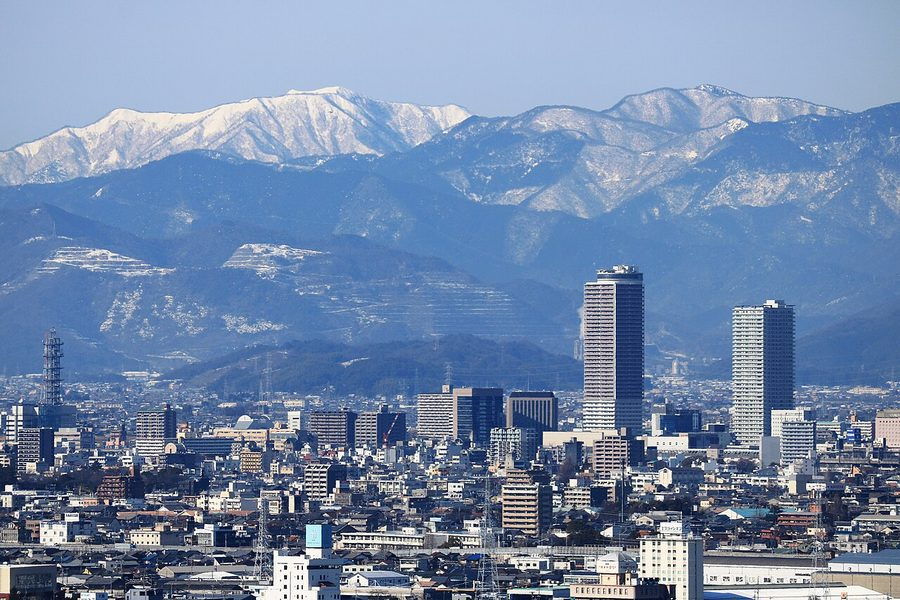
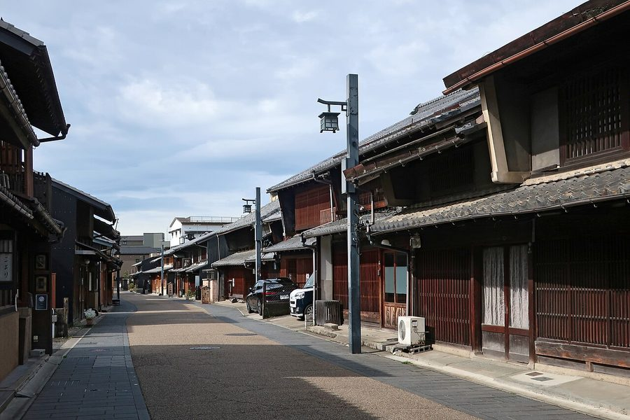
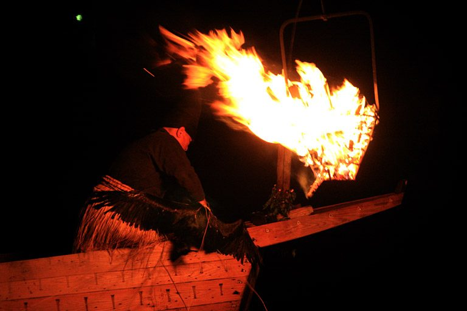
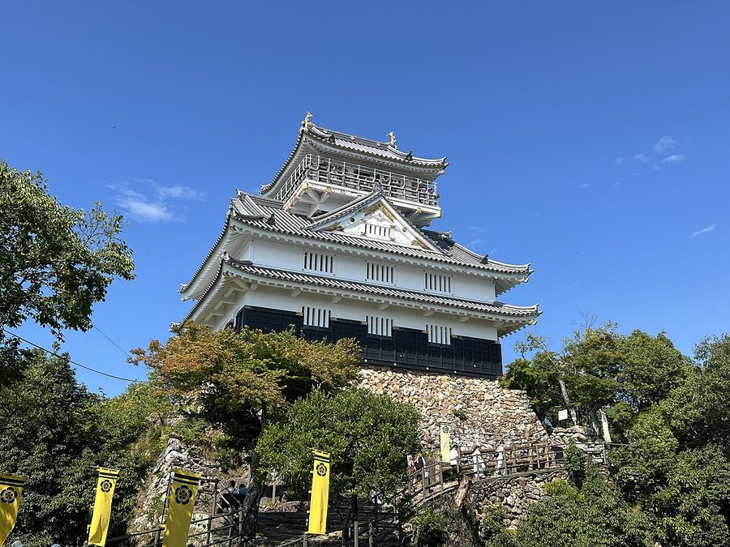

岐阜県岐阜市の日帰り温泉・銭湯・サウナ（22件）
寄り道スポット検索アプリ「ヨッテコ」の収録データから、岐阜県岐阜市の日帰り温泉・銭湯・サウナを営業時間・料金つきで一覧にしました（2026年8月時点）。
最も安いのは三田洞神仏温泉（490円）。最も遅くまで入れるのはNEO GIFU SAUNA 新岐阜サウナ（翌10:00まで）。朝風呂なら長良川温泉 十八楼（5:30開店）。
岐阜県岐阜市はどんなまち？
数字で見る🔍岐阜県岐阜市
まちの横顔




- 地形と気候: 濃尾平野の北方に位置し、市域の北東から南西を長良川が貫流します。旧市街地は長良川がつくった扇状地に形成され、それより下流側には旧河道や自然堤防などの地形も見られます。気候は温暖湿潤気候で、年平均気温は16.2℃、平年値で猛暑日は16.7日、熱帯夜は26.1日にのぼります。
- 観光: 1300年以上の歴史を持つ長良川の鵜飼で知られ、日本の音風景100選にも選ばれています。長良川の中流流域は1985年に名水百選に選ばれ、水浴場としても選内で唯一の河川として日本の水浴場88選に選ばれました。戦国時代には斎藤道三や織田信長が金華山やその山麓に城や居館を築き、その西側に城下町が発展しました。
- 特産と文化: 古くから長良川の水運で栄え、材木・美濃和紙・糸などを扱う問屋業や、和紙や竹を材料とする提灯・団扇の手工業が発達し、今も岐阜市の伝統産業となっています。戦後は繊維産業で栄え、最盛期には大阪・東京と並ぶ日本三大ファッション産地と呼ばれました。
寄り道充実度（全国偏差値）
偏差値・順位は、ヨッテコ収録データ（2026年8月時点・26,033件）を市区町村別に集計した施設数の全国分布（1,728市区町村）から毎回算出しています。カードを押すとカテゴリ別の分析に切り替わります。
日帰り温泉から見た岐阜県岐阜市
21時以降も営業する店は64%、全国水準（40%）の1.6倍。——数だけでは見えない、湯の個性がここにある。
- 天然温泉を使う店は41%で、全国水準（67%）を下回ります。湧いている湯よりも、通いやすさで選ばれる施設が多いということになります。
- 73%の店にサウナがあります。全国水準は52%です。年平均気温16.2℃、猛暑日16.7日・熱帯夜26.1日という温暖湿潤気候の市。整えて帰るという寄り道の仕方が、73%という数字に出ています。
- 64%の店が21時を過ぎても開いています。全国水準は40%です。1300年以上続く長良川の鵜飼で知られ、名水百選にも選ばれた清流を擁する市。一日の終わりに一風呂、という選択肢が残っています。
- 入浴料の中央値は750円でした（判明15件）。全国の650円と比べて15%高い水準です。旅先で入る湯としての価格帯です。
出典: 施設データ=ヨッテコ収録データ（26,033件・2026年8月時点）。偏差値・全国順位・全国水準は全1,728市区町村の分布から毎回算出。 / 人口=総務省「住民基本台帳に基づく人口、人口動態及び世帯数」（2026年1月1日現在） / 面積=国土地理院「全国都道府県市区町村別面積調」（2026年4月1日時点） / 森林率=農林水産省「2025年農林業センサス（農山村地域調査）」市区町村別林野率（2025年、林野率（林野面積÷総土地面積）） / 年平均気温=気象庁「平年値（1991-2020年）」。市区町村の代表点（国土交通省「大字・町丁目レベル位置参照情報」）から最も近い観測点の値 / まちの解説=日本語版Wikipedia「岐阜市」（https://ja.wikipedia.org/wiki/岐阜市、2026年8月21日取得、CC BY-SA 4.0） / 写真=Wikimedia Commons（各キャプションに作者・ライセンスを記載）
曜日別の営業施設数
| 月 | 火 | 水 | 木 | 金 | 土 | 日 |
|---|---|---|---|---|---|---|
| 19 | 20 | 20 | 18 | 21 | 22 | 22 |
木曜日が最も休みが多く（各4件が定休）、年中無休は15件です。※営業時間データのある22件で集計
入浴料金の分布（大人）
| 500円以下 | 2件 | |
| 501〜800円 | 7件 | |
| 801〜1,200円 | 2件 | |
| 1,201円以上 | 4件 |
料金が確認できた15件で集計。
施設一覧
| 施設 | 営業時間 | 料金（大人） |
|---|---|---|
| -PRIVATE SAUNA & SOBA BAR- いろは サウナ JR岐阜駅徒歩5分の完全個室プライベートサウナ。和風の落ち着いた畳敷き空間と蕎麦バーを併設し、サウナ利用後の食事も楽しめ… | 10:00〜22:30 ※曜日により異なる | — |
| ASP SAUNA サウナ 岐阜市菅生に位置するプライベートサウナ。清流長良川の地下水を活用した高品質な水風呂と、複数のサウナルーム（バレル・アップ… | 10:00〜22:00 ※曜日により異なる | 4,800円 |
| NEO GIFU SAUNA 新岐阜サウナ サウナ 岐阜駅エリアの男性専用サウナ＆カプセルホテル。複数のサウナ（高温、薬草蒸気など）と水風呂が充実。宿泊とサウナ・食事が一棟… | 11:00〜34:00 | 1,900円 |
| かぎや温泉 サウナ | 15:30〜22:00 | 530円 |
| ぎふ清流 ととのうサウナ 露天風呂サウナ 長良川伏流水を活用した水風呂を特徴とするサウナ施設。水着着用で男女共用ゾーンを利用でき、複数種類のサウナと露天ととのいエ… | 10:00〜22:00 ※曜日により異なる | 1,540円 |
| のはら湯 天然温泉サウナ 池田さくら温泉を直送する銭湯。岩風呂の大きな温泉で天然温泉を楽しめる | 10:00〜23:00 ※曜日により異なる | 530円 |
| ゆのヤマヨ サウナ | 14:00〜23:00（火休） | 530円 |
| アクアリゾート岐阜 ふじの湯 露天風呂サウナ 岐阜市のスーパー銭湯。高温サウナとオートロウリュウ、炭酸風呂、露天風呂、ジェットバスなどが充実。カットサロンやマッサージ… | 10:00〜24:00 ※曜日により異なる | 850円 |
| サウーニャ.エイワン サウナ | 14:00〜22:00（月休） | — |
| 三田洞神仏温泉 天然温泉 | 10:00〜17:00 | 490円 |
| 余熱利用施設 プラザ掛洞 サウナ | 13:00〜21:00 | 490円 |
| 公園の湯 サウナ | 16:00〜21:30（木休） | 530円 |
| 六条温泉 喜多の湯 露天風呂サウナ 岐阜市の人工温泉施設。平日と土日祝で異なる料金設定。岩盤浴、露天風呂、ジェットバス、食事処を備えた複合施設。 | 09:00〜25:00 | 750円 |
| 天然温泉 金華の湯 ドーミーイン岐阜駅前 天然温泉露天風呂サウナ 岐阜駅前のドーミーインチェーンホテル。天然温泉「金華の湯」の大浴場・露天風呂・サウナをデイユースでも利用可能。 | 13:00〜24:00 | — |
| 岐阜グランドホテル 天然温泉露天風呂サウナ | 06:00〜10:00 | — |
| 整居STATION サウナ | 10:00〜18:00（水・木休） | — |
| 松乃湯 | 14:00〜22:00（月休） | 530円 |
| 長良川清流ホテル 天然温泉サウナ | 13:00〜21:00 | 800円 |
| 長良川温泉 十八楼 天然温泉露天風呂 創業160有余年の老舗旅館 | 05:30〜24:00 | 1,500円 |
| 長良川観光ホテル 石金 天然温泉露天風呂 | 12:00〜14:30 | — |
| 長谷川温泉 ホテルパーク 天然温泉露天風呂 長良川を眺めながら入浴できる温泉 | 13:00〜20:00 | — |
| 鵜匠の家 すぎ山 天然温泉露天風呂 自然に溶け込む長良川畔の穏やかな時間 | 11:30〜14:30 | 1,000円 |